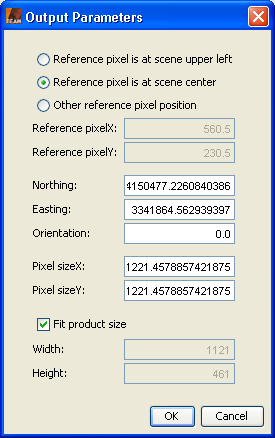

| Reprojection Output Parameters |
|
This dialog lets you specify the position of the reference pixel and the easting and northing at this pixel of the output product. Also you are able to set the orientation angle and the pixel size. The orientation angle is the angle between geographic north and map grid north (in degrees), with other words, the convergence angle of the projection's vertical axis from true north. Easting and northing and also the pixel size are given in the units of the underlying map (e.g. dec. degree for geographic and meter for the UTM projection).
In order to force a certain width and height in pixels for the output product, you must deselect the fit product size option. Otherwise the size is automatically adjusted, so that the entire source region is included in the new region.
